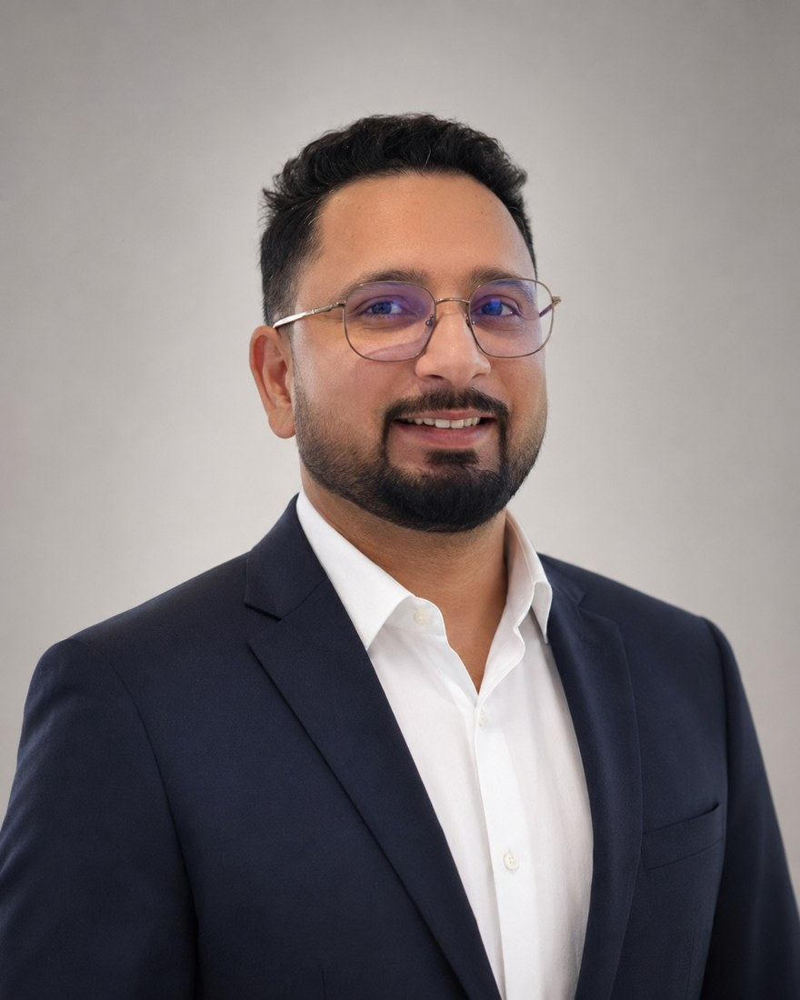

Years of Saudi IT experienceسنوات خبرة تقنية في السعودية
Available for senior IT / ERP opportunities
متاح لفرص عمل في تقنية المعلومات و ERP
Sr. IT Support Specialist | System & ERP Administrator أخصائي دعم تقني أول | مسؤول أنظمة و ERP
Microsoft 365 · ERPNext · Network & Cloud Support · Multi-site IT Infrastructure Microsoft 365 · ERPNext · الشبكات والدعم السحابي · البنية التحتية متعددة المواقع
Saudi-based IT professional supporting Microsoft 365, ERPNext, Windows/Linux servers, networks, cloud VPS, backups, end users, and business-critical IT operations with a focus on reliability, automation, and process improvement. محترف تقنية معلومات مقيم في السعودية يدعم Microsoft 365 و ERPNext وخوادم Windows/Linux، الشبكات، الخوادم السحابية، النسخ الاحتياطي، المستخدمين، واستمرارية خدمات تقنية المعلومات مع التركيز على الاعتمادية والأتمتة وتحسين الإجراءات.
portfolio.ai
booting profile...

8+
Years Saudi Experience
سنوات خبرة في السعودية
Multi
Business Sector Experience
خبرة في قطاعات متعددة
30–40%
Paperwork Reduction
تقليل الأعمال الورقية
SYSTEMS ONLINE
الأنظمة متصلة
Microsoft 365ERPNextFrappeEntra IDExchange OnlineWindows ServerLinux UbuntuDigitalOceanNetworkingCloud VPS
Microsoft 365ERPNextFrappeEntra IDExchange OnlineWindows ServerLinux UbuntuDigitalOceanNetworkingCloud VPS
IP cameras managed across projectsكاميرا IP تمت إدارتها عبر المشاريع
Paperwork reduction through digital workflowsتقليل الأعمال الورقية عبر سير العمل الرقمي
Professional Profile
الملف المهني
Business-focused IT support with ERP, cloud, and infrastructure depth. دعم تقني موجه للأعمال مع خبرة في ERP والسحابة والبنية التحتية.
Senior IT Support and System & ERP Support professional with strong hands-on background in L1/L2 support, escalation handling, user lifecycle management, ERPNext administration, access/email support, connectivity troubleshooting, SOP documentation, vendor coordination, preventive maintenance, and business-critical IT service continuity. محترف في الدعم التقني وإدارة الأنظمة و ERP بخبرة عملية قوية في دعم L1/L2، معالجة التصعيد، إدارة دورة حياة المستخدمين، إدارة ERPNext، دعم البريد والوصول، حل مشاكل الاتصال، توثيق الإجراءات، التنسيق مع الموردين، الصيانة الوقائية، واستمرارية خدمات تقنية المعلومات الحرجة للأعمال.
Multi-business sector supportدعم قطاعات عمل متعددة
ERPNext customization & trainingتخصيص ERPNext وتدريب المستخدمين
Microsoft 365 administrationإدارة Microsoft 365
Process improvement & automationتحسين الإجراءات والأتمتة
AI Recruiter Viewعرض ذكي لأصحاب العمل
Quick answers hiring managers usually want first.إجابات سريعة على أهم ما يبحث عنه أصحاب العمل.
Use the buttons below to instantly view a focused summary of my strongest fit, ERPNext value, infrastructure support, and process improvement impact.استخدم الأزرار التالية لعرض ملخص سريع عن أفضل نقاط القوة، قيمة ERPNext، دعم البنية التحتية، وتأثير تحسين الإجراءات.
recruiter.ai
Technical Stackالمهارات التقنية
Skills mapped across support, systems, ERP, cloud, and networks.مهارات تغطي الدعم والأنظمة وERP والسحابة والشبكات.
IT Support & Service Deliveryالدعم التقني وتقديم الخدمة
L1/L2 support, incidents, service requests, escalation, remote/on-site support, user training, SOPs.دعم L1/L2، الحوادث، طلبات الخدمة، التصعيد، الدعم عن بعد والموقع، تدريب المستخدمين، إجراءات العمل.
Microsoft 365 & IdentityMicrosoft 365 والهوية
Exchange Online, Outlook, Entra ID, mailbox access, password resets, security settings, user lifecycle.Exchange Online، Outlook، Entra ID، صلاحيات البريد، إعادة تعيين كلمات المرور، إعدادات الأمان، إدارة المستخدمين.
ERPNext / Frappe Administrationإدارة ERPNext / Frappe
ERPNext customization, custom apps, users, roles, workflows, reports, print formats, HR, Finance, Inventory, Payroll support, and end-user training.تخصيص ERPNext، بناء تطبيقات مخصصة، المستخدمون، الأدوار، سير العمل، التقارير، النماذج، دعم الموارد البشرية والمالية والمخزون والرواتب، وتدريب المستخدمين.
Systems, Cloud & Networksالأنظمة والسحابة والشبكات
Windows, Linux Ubuntu, Windows Server, VPS, DigitalOcean, Contabo, LAN/WAN, VPN, routing, switching, Wi‑Fi.Windows، Linux Ubuntu، Windows Server، VPS، DigitalOcean، Contabo، LAN/WAN، VPN، التوجيه، السويتشات، Wi‑Fi.
Microsoft 365Exchange OnlineEntra IDERPNextFrappeWindows ServerLinuxDigitalOceanContaboMariaDBPythonHTMLCSSWordPressFlutterCCTV/IP CamerasLAN/WANVPNBackupsIT Assets
Highlighted Workأبرز الأعمال
Projects that show infrastructure, ERP, and business systems impact.مشاريع توضح أثر البنية التحتية وERP وأنظمة الأعمال.
ERPNext Customization, Custom Apps & User Trainingتخصيص ERPNext وبناء التطبيقات وتدريب المستخدمين
Worked on ERPNext in AFMCO and in the current company, supporting users, roles, permissions, workflows, reports, print formats, business process customization, custom app requirements, troubleshooting, and end-user training.عملت على ERPNext في AFMCO وفي الشركة الحالية، بما يشمل دعم المستخدمين والأدوار والصلاحيات وسير العمل والتقارير والنماذج وتخصيص إجراءات العمل ومتطلبات التطبيقات المخصصة وحل المشاكل وتدريب المستخدمين.
Customization
Custom Apps
End-user Training
Process Improvement
Microsoft 365 Administrationإدارة Microsoft 365
Exchange Online, Outlook, Entra ID users, mailbox access, password resets, security settings, access control, and user lifecycle support.إدارة Exchange Online وOutlook ومستخدمي Entra ID وصلاحيات البريد وإعادة تعيين كلمات المرور وإعدادات الأمان والتحكم بالوصول ودعم دورة حياة المستخدم.
Cloud VPS & Linux Operationsتشغيل الخوادم السحابية وLinux
DigitalOcean and Contabo VPS administration, Linux maintenance, access control, monitoring, backups, and hosted business system support.إدارة خوادم DigitalOcean وContabo، صيانة Linux، التحكم بالوصول، المراقبة، النسخ الاحتياطي، ودعم أنظمة الأعمال المستضافة.
Paperwork Reduction & Digital Workflowsتقليل الأعمال الورقية وسير العمل الرقمي
Improved business support processes by moving manual work into ERPNext workflows, reports, print formats, role-based access, and user training to reduce paperwork and improve follow-up.تحسين إجراءات دعم الأعمال من خلال نقل العمل اليدوي إلى سير عمل ERPNext والتقارير والنماذج والصلاحيات وتدريب المستخدمين لتقليل الأعمال الورقية وتحسين المتابعة.
Experienceالخبرة العملية
Saudi IT experience across manufacturing, contracting, retail, and office environments.خبرة تقنية في السعودية عبر التصنيع والمقاولات والتجزئة والبيئات المكتبية.
Mar 2025 — Present
IT Technical Leadقائد تقني لتقنية المعلومات
Ajial Water - Ajial Mowafaq Industries Co. | RiyadhLead IT support and infrastructure operations and support ERPNext administration, customization requirements, reports, workflows, user training, and daily business application support.قيادة عمليات الدعم والبنية التحتية ودعم إدارة ERPNext ومتطلبات التخصيص والتقارير وسير العمل وتدريب المستخدمين ودعم تطبيقات الأعمال اليومية.
Jan 2023 — Feb 2025
ICT Technical Supportدعم تقني لتقنية المعلومات والاتصالات
AFMCO Ltd - Abdullah Fahad Al Mutairi Co. | RiyadhManaged cloud-hosted business systems and ERPNext support, including users, roles, permissions, workflows, reports, print formats, customization support, training, servers, backups, and user support.إدارة أنظمة الأعمال السحابية ودعم ERPNext، بما يشمل المستخدمين والأدوار والصلاحيات وسير العمل والتقارير والنماذج ودعم التخصيص والتدريب والخوادم والنسخ الاحتياطي ودعم المستخدمين.
Mar 2022 — Jan 2023
IT Supportدعم تقنية المعلومات
Ballon Supermarket (BSM) | RiyadhSupported retail IT operations including ERP, POS systems, desktops, printers, network devices, and troubleshooting.دعم عمليات تقنية المعلومات في التجزئة بما يشمل ERP وPOS وأجهزة سطح المكتب والطابعات وأجهزة الشبكة وحل المشاكل.
Jul 2018 — Feb 2022
IT Supportدعم تقنية المعلومات
Mosfer Bin Haider Contracting Co. | DammamProvided support for users, desktops, servers, networks, enterprise applications, backups, and performance issues.تقديم الدعم للمستخدمين وأجهزة الكمبيوتر والخوادم والشبكات وتطبيقات الأعمال والنسخ الاحتياطي ومشاكل الأداء.
MBA in Information Technology & Marketing
Swami Vivekanand Subharti University, India | 2022 - 2024
Bachelor in Computer Applications
Pacific University, Udaipur, India | 2017
Cloud Computing Fundamentals
IT Project Management
Data Analysis
HTML
English - Full Professional
Arabic - Conversational
Hindi - Native
Contactتواصل
Let’s connect for IT support, ERP, system administration, or cloud infrastructure roles.لنتواصل بخصوص فرص الدعم التقني أو ERP أو إدارة الأنظمة أو البنية السحابية.
Based in Riyadh, Saudi Arabia. Open to senior IT support, system administration, ERPNext, and infrastructure support opportunities.مقيم في الرياض، السعودية. متاح لفرص الدعم التقني المتقدم، إدارة الأنظمة، ERPNext، ودعم البنية التحتية.
NameالاسمAazad Mir
LocationالموقعRiyadh, Saudi Arabiaالرياض، السعودية
Phoneالهاتف+966 54 180 2463
Emailالبريدaazadmir111@gmail.com
LinkedInLinkedInaazadmir1996
Message on WhatsAppمراسلة واتساب